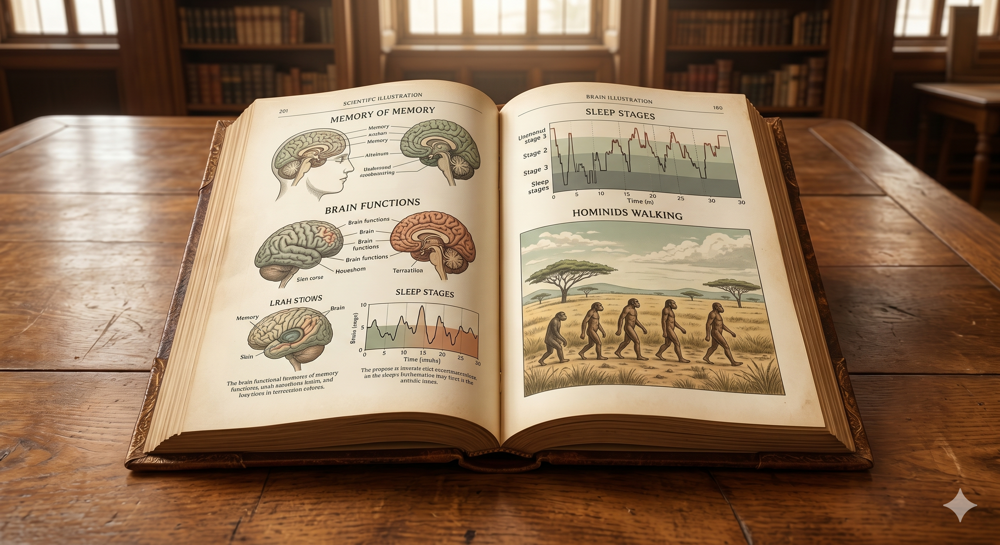
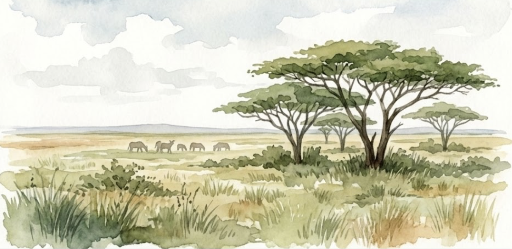

私たちが日々の生活の中で経験した出来事や、授業で新しく学習した知識を脳の中に保存し、後で必要なときに思い出すための一連のプロセスを「記憶（Memory）」と呼びます。心理学の歴史において、この記憶という現象を初めて科学的かつ定量的に測定することに挑戦したのが、ドイツの心理学者であるヘルマン・エビングハウス（Hermann Ebbinghaus）です。彼は、過去の先入観や個人的なイメージによる影響を徹底的に排除するため、母音と子音を組み合わせた意味を持たない単語（無意味つづり：例えば 「BIT」 や 「JAT」、「KOF」 など）を大量に考案し、自分自身を被験者として暗記テストを繰り返しました。
その結果、一度覚えた情報が時間の経過とともにどのように失われていくかを調べ、グラフに描き表しました。これが有名な「エビングハウスの忘却曲線」です。この研究によって、脳に入ってきた情報は覚えた直後に最も速いスピードで失われ、なんと1日後には全体の約3割ほどしか頭の中に残らないという驚くべき事実が実証されました。つまり、私たちの脳は「そもそも急速に忘れるように作られている」のです。この急速な忘却に抗い、学んだことを知識として定着させるためには、適切なタイミングでの定期的な復習が極めて重要な意味を持ちます。
しかし、提示されるすべての情報が、まったく均等に忘れ去られるわけではありません。心理学の実験では、いくつかの単語リストを順番に提示して暗記してもらうと、その単語がリストの中の「どの順番（位置）で提示されたか」によって、明らかに覚えやすさが異なることが分かっています。この現象を「系列位置効果（Serial position effect）」といいます。この効果を詳細に分析すると、対照的な2つの心理学的メカニズム見えてきます。
提示された単語リストの「最初の方」にある単語を、比較的よく記憶している現象を指します。これは、最初の方に出てきた情報に対して、私たちの脳が頭の中で何度も繰り返して唱え直す（これを心理学で「リハーサル」と呼びます）時間的余裕が十分に確保できるためです。繰り返し唱えられた情報は、一時的な保管場所から、長期的な保存領域である「長期貯蔵庫」へと送られ、安定した記憶へと定着していきます。
提示された単語リストの「最後の方」にある単語を、非常によく記憶している現象を指します。こちらは、直近に目にしたり耳にしたりしたばかりの情報が、いまだ脳内の一時的な作業用記憶スペース（「短期貯蔵庫」）の中に、消えずにそのまま留まっているために発生します。まだ記憶がフレッシュな状態であるため、すぐに思い出すことができるのです。
この系列位置効果をグラフに表すと、最初と最後の正答率が高く、中盤の正答率が大きく落ち込む「U字型」の美しい曲線（系列位置曲線）を描くことになります。これを私たちの身近な大学の講義に当てはめて考えてみましょう。90分間の講義の冒頭で説明された重要な定義（初頭効果）や、最後にまとめとして語られた結論（新近効果）は、私たちの記憶に比較的残りやすいと言えます。しかし、講義の中だるみが生じやすい「中盤の具体的な解説や事例」は、最も脳から抜け落ちやすい弱点エリアなのです。したがって、効率よく自習やテスト勉強を進めるためには、あえて中盤に語られた内容を意識的にピックアップして復習する工夫が必要になります。
皆さんは小学校2年生の算数の時間、必死になって「九九（くく）」を暗唱した経験があるはずです。あの時、何度も声に出して「ににんがし、にさんがろく……」と繰り返した行為は、心理学における典型的な「維持リハーサル」に他なりません。当時の私たちは、九九の数字の意味を深く考える（精緻化する）余裕はなく、ただひたすら音として繰り返すことで、短期貯蔵庫からなんとか長期貯蔵庫へと記憶を転送しようとしていたのです。
また、九九を上から順番に暗唱するとき、「最初の一の段や二の段」と「最後の九の段」はスラスラ言えるのに、「七の段や八の段（中盤）」で一瞬つまずいてしまった経験はありませんか？これもまさに、幼少期の皆さんの脳内で「系列位置効果」が忠実に作動していた証拠なのです。
近年の認知心理学や認知神経科学における最もエキサイティングな発見の一つは、私たちの身体活動（運動）が、脳の記憶力や学習の効率に対して決定的な影響を及ぼしているという客観的事実です。これまで、「勉強中に体を動かすのは集中していない証拠だ」と考えられたり、テスト前に部活動を全面的に休止して机にしがみつくことばかりが推奨されたりしてきました。しかし最新 of 脳科学は、それがむしろ学習効率を下げている可能性を指摘しています。
私たちが、息が軽く上がる程度の適度な有酸素運動（例えば早歩きのウォーキングや軽いジョギング、階段の上り下りなど）を行うと、脳の記憶の中枢である「海馬（かいば）」において、「BDNF（脳由来神経栄養因子：Brain-Derived Neurotrophic Factor）」というタンパク質の一種が劇的に増加することが実証されています。
脳内の神経細胞（ニューロン）の生存を保護し、新しく健全な神経細胞が誕生することを強力に手助けする、まさに「脳にとっての最高のごちそう（栄養剤）」とも言える物質です。さらに、神経細胞同士の接合部である「シナプス」の結びつきをより柔軟に、かつ強固にアップデートすることで、新しい情報を素早くスムーズに処理・学習する脳のインフラを物理的に作り出す役割を担っています。
神経科学の研究グループが行った比較実験によれば、ただ机に向かってテキストを黙読し続けるグループよりも、学習の前後に20分程度の軽い運動を挟んだグループの方が、その後のテストにおける記憶の定着率が統計的に有意に高いことが実証されました。身体をアクティブに動かすことは、脳のエネルギーを消費して疲れさせる行為ではなく、むしろ脳が新しい情報を効率よく吸収して長期貯蔵庫へと安定的に保存するための「土壌を豊かに耕す」プロセスなのです。
中学校や高校の「保健体育」の授業で、「適度な運動はストレスを解消し、心身の健康的な発達を促す」と学んだ記憶があると思います。当時の皆さんは「そんなの当たり前だ」「ただ健康に良いだけだろう」と聞き流していたかもしれません。しかし、その身体的な発散が、脳科学的にはまさに脳内のBDNFを活性化させ、皆さんの勉強を大いに助けていたのです。
「部活動を一生懸命やっている生徒ほど、引退した後にものすごい集中力を発揮して一気に成績を伸ばす（いわゆる『受験の追い込み力』）」という現象がよく見られます。これも単なる精神論（根性）だけではなく、運動によって日頃から海馬の神経回路（BDNF）が豊かに耕されていたことによって、学力を急速に吸収する脳の基盤（認知的予備能）が完成していたためと説明できるのです。
昼間に獲得した情報を脳の中にしっかりと定着させるために、運動に並んで、あるいはそれ以上に重要となる決定的な日常行動が「睡眠（Sleep）」です。テスト前になると、多くの学生が睡眠時間を削って、いわゆる「一夜漬け」で乗り切ろうと画策します。しかし心理学から見れば、これは自らの記憶力を最も低下させる、著しく非効率なアプローチです。私たちが眠っている間、脳は決して活動を停止して休んでいるわけではなく、起きている間に乱雑に詰め込まれた大量の情報を整理整頓する「大掃除」を自律的に行っています。
睡眠は、急速な眼球運動を伴う「レム睡眠（REM sleep）」と、眼球運動を伴わない深い眠りである「ノンレム睡眠（Non-REM sleep）」という対照的な2つのフェーズから構成され、一晩の睡眠の中でこのサイクルが約90分おきに何度も繰り返されています。 ノンレム睡眠（特に「徐波睡眠」と呼ばれる最も深い段階）のとき、脳は昼間に学習した「事実や意味、言葉」といった学習情報（エピソード記憶）を、一時的な海馬から強固な大脳皮質へと美しく整理・再配置して長期記憶へと昇華させます。一方、レム睡眠のときには、楽器の演奏やスポーツの技術といった「体で覚える手続き記憶」を定着させるとともに、その日に生じた嫌な気持ちや興奮などの感情の生理的リフレッシュを行っています。
何かを学習した直後のテストよりも、適切な睡眠をしっかりと取って一晩眠った後の方が、むしろ記憶の再生数（思い出す量）やパフォーマンスが飛躍的に向上する心理現象を指します。脳が寝ている時間を利用して、乱雑に散らばっていた情報（知識のピース）を綺麗につなぎ合わせ、整頓してくれたことを証明する重要な現象です。
心理学における単語ペアの暗記実験でも、昼に覚えてその日の夕方にテストをしたグループに比べ、夜に覚えてしっかり睡眠を取り、翌朝にテストをしたグループの方が、想起できる単語数が有意に増加することが統計的に明らかになっています。
もし皆さんが徹夜で勉強を続けたらどうなるでしょうか。睡眠不足に陥ると、脳の感情や恐怖を司る「扁桃体（へんとうたい）」という部位の働きが過剰になり、コントロールを失って暴走し始めます。これによって、脳は「嫌な出来事や、不快な記憶、失敗への恐怖」ばかりを異常なほど強く頭に焼き付け、逆に楽しかったことやポジティブな情報を一切思い出せなくなる、最悪の偏り（「ネガティブバイアス」）が作動してしまいます。徹夜明けに気分が暗くなったり、些細なことでひどく落ち込んだりするのは、この脳のブレーキが壊れているためなのです。慢性的な睡眠不足は、単に学習効率を下げるだけでなく、うつ病や深刻な意欲の低下を直接引き起こします。
高校の生物で自律神経や脳の仕組みを学んだり、家庭科の「生活習慣と健康」の単元で「睡眠は成長ホルモンを分泌させ、心身を回復させるために重要である」と教えられたりしたことを覚えているでしょうか。当時の教科書的な知識は、今、私たちの「学習効率」というダイレクトな利益として深く繋がってきます。
皆さんが高校の定期テストや大学入試、英検の勉強などをしていたとき、「寝る直前に暗記した単語や歴史の年号が、翌朝起きたらなぜかスラスラ言えた」という不思議な体験はなかったでしょうか。まさに高校の保健や生物で学んだレム睡眠・ノンレム睡眠のサイクルが脳内で忠実に回転し、皆さんの知らないところで脳が「記憶の定着（レミニセンス現象）」を勝手に終わらせてくれていたからなのです。テスト前の徹夜がどれほど「百害あって一利なし」であるか、科学的な知識として再確認できます。
私たちはここまで、記憶を良くする系列位置効果、運動の効果（BDNF）、...を個別に学んできました。しかし、なぜ私たちの脳はこのような一見風変わりなシステム（動かなければ頭が悪くなり、眠らなければ不快なことばかり覚えてしまうシステム）を持っているのでしょうか。その謎を解き明かすために、進化心理学の視点に立ち、「私たちの心と体は、本来、過酷な大自然の環境を生き抜くために作られている」という生物学的大前提から見つめ直す必要があります。
ホモ・サピエンス（現生人類）の遺伝子や、私たちの脳の神経系プラットフォームは、その歴史の大半（約30万年間）を過ごした、広大で過酷な「アフリカの東部のサバンナ環境」を生き残るために精巧にチューニングされてきました。サバンナで生きるということは、毎日が猛獣の脅威、突然の天候の崩壊、飢餓による全滅の危機との戦いでした。群れからほんの少しはぐれるだけで、野生動物の餌食になり死を迎える過酷な世界です。
このような極限状態で命を繋ぎ、遺伝子を次世代に残すためには、私たちのすべての心身の反応が「生存最優先」でなければなりませんでした。例えば、危険を避けるための「ネガティブバイアス」は、過去の失敗（敵に襲われた、毒を口にした）を恐怖と共に強烈に記憶に焼き付けることで、同じ致命的ミスを絶対に繰り返させないための生存システムでした。また、群れから阻害されたときに恐怖や不安で脳の働きを一時的に高める「寂しさの効果」は、孤独な警戒状況で野生動物に不意を突かれないための心身の防御機構だったのです。そして、当時のサバンナでは、生き延びるために毎日10数キロも走ったり、獲物を追いかけて「身体を活発に動かすこと」は当たり前の生活前提でした。また、太陽が沈み暗闇に包まれれば、外敵から見つかりにくいシェルターで「深く睡眠を取り、体を回復させて情報を整理すること」以外に選択肢はなかったのです。

しかし、現代社会の生活環境は、私たちが本来生きるように想定されて設計されたサバンナの前提から、あまりにも大きく乖離してしまっています。この甚だしいズレを、心理学や人類学では「進化の不適合（Evolutionary Mismatch：環境ミスマッチ）」と呼びます。現代人が陥っている様々な深刻な不調（集中力の欠如、慢性的な睡眠障害、理由のない不安、うつ病のリスク増大など）のほぼすべては、この「サバンナ用に作られた精密な脳」を「過度に人工化された現代社会」のなかで無理やり稼働させているために発生しているエラー反応なのです。
| ライフスタイル | サバンナでの大前提（本来の設計） | 現代社会の実態（環境ミスマッチ） |
|---|---|---|
| 身体活動（運動） | 食糧獲得のために1日10数キロも移動する。動くことでBDNFが増え、脳が最高の状態になる。 | 1日中デスクワークやスマホの前に座りっぱなしで、1歩も活動しない生活。 |
| 睡眠サイクル | 太陽が沈むと眠りにつき、深いノンレム睡眠で情報整理と脳の修復を行う。 | LEDの強いブルーライトやスマホの過剰な情報刺激で深夜まで脳が興奮し続ける。 |
| 不安・警戒システム | 一時的な猛獣の恐怖が去れば安心する。ネガティブバイアスは実質的な生存手段。 | SNSの悪意やネットの情報過多による「終わらない慢性的ストレス」に脳が警戒を続ける。 |
人間は、本来的に「動くようにできている」し、「規則正しく眠るようにできている」生物です。コロンビア大学のヤコフ・スターン（Yakov Stern）教授らの高名な研究によると、若いうちから好奇心を持って新しいことや未知の体験に主体的に「挑戦」し、身体をアクティブに駆動させる習慣（これを「認認知的な予備能（Cognitive Reserve）」と呼びます）を培っている人ほど、老後において認知症や記憶力低下といった脳の機能低下を劇的に遅らせ、発症リスクを大幅（約35%）に低下させることが分かっています。つまり、私たちの脳は「使わない、動かさない、変化がない」環境に置かれると、まるで不要な筋肉が落ちていくかのように、ものすごいスピードで衰えていってしまうシステムなのです。
私たちが、自分自身の精巧な脳と体が「本来どのような環境（サバンナ）を想定して設計されたのか」という科学的な事実を知り、その事実を羅針盤として「日々の生活習慣（早起き、定期的な運動、十分な睡眠、SNSの遮断）」を見直すことは、単に健康になるためだけでなく、過酷な現代情報社会の中で自分自身の心と脳を守り、最も効率的に能力を発揮して元気に生き抜くための、最も本質的で唯一の心理学的アプローチなのです。
この副読本で学習した内容を振り返るための、確認テストです。 回答を完了し、「回答を採点して提出する」ボタンをクリックすると、データが送信されます。